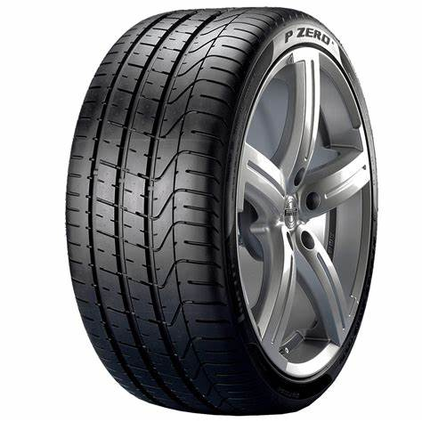

El mantenimiento preventivo de las llantas es crucial para garantizar la seguridad en la
carretera y
extender su vida útil. En este artículo, te compartimos consejos clave para cuidar adecuadamente
tus
llantas
y evitar gastos imprevistos.

Elegir las llantas adecuadas para tu vehículo es una decisión importante. En este artículo, te
brindamos información valiosa sobre los aspectos a considerar al momento de seleccionar las
llantas
que se
ajusten a tu auto y tus necesidades.

Mantener el aceite de tu vehículo en buen estado es crucial para el rendimiento y la longevidad
del motor. El aceite
lubrica las partes internas del motor, reduce la fricción y ayuda a mantener el motor limpio al
eliminar residuos y
partículas.

El alineamiento de llantas es el ajuste de los ángulos de las llantas para que coincidan con las
especificaciones
del fabricante del vehículo. Este proceso asegura que las llantas estén perfectamente paralelas
entre sí y
perpendiculares al suelo, por esto es un proceso sumamente importante para nuestro vehículo

Mantener un desgaste uniforme en las llantas de tu vehículo es crucial para su seguridad y
rendimiento. Una de
las maneras más efectivas de lograrlo es mediante la rotación regular de las llantas. Aquí te
explicamos por qué
es importante y cómo hacerlo correctamente.

El cambio regular de los filtros de tu vehículo es una parte esencial del mantenimiento que asegura un rendimiento
óptimo, una mayor eficiencia de combustible y una vida útil prolongada del motor. En Llantera Wifragara, ofrecemos
servicios de cambio de filtros con productos de alta calidad y personal capacitado para mantener tu vehículo en las
mejores condiciones.